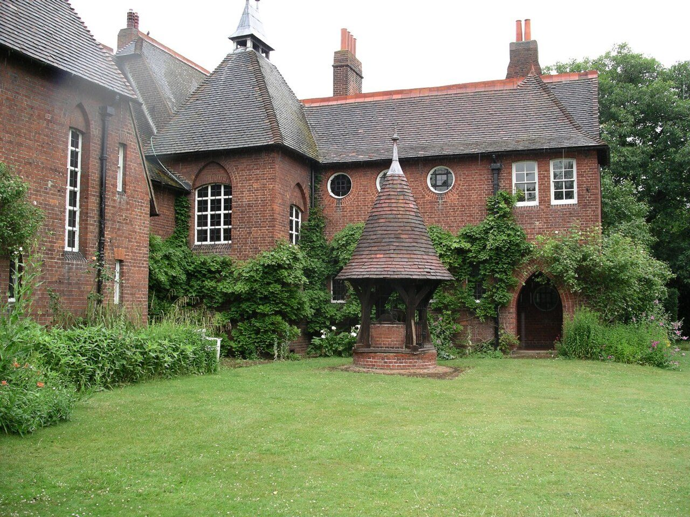

References / Architecture / 316
Red House, Bexleyheath
The red-brick house that Philip Webb and William Morris designed in 1859 as Morris’s home, an early building of the movement.
- Source
- Wikipedia: Red House, Bexleyheath
- Creator
- Philip Webb and William Morris
- Made
- Designed 1859; completed 1860
- Style
- Arts and Crafts (agent-proposed, not yet reviewed by a person)
- Moods
- Rustic, medieval, domestic
- Evidence
- Inspected a 2004 photograph of the garden front by the Wikipedia user Velela on Commons (1296 × 972 px; viewed at 1280 px wide). The interior was not inspected.
- Reviewed
- Rights
- Open license, stored. License: public domain. Rights policy

Context
Webb and Morris co-designed the house in 1859 as a family home for Morris; it was completed in 1860. Wikipedia calls it an early example of what came to be known as the Arts and Crafts movement. Wikipedia.
Morris called it “very medieval in spirit”. Burne-Jones and Rossetti helped decorate it, and while living there Morris helped form Morris, Marshall, Faulkner & Co. and began his first wallpaper designs. Wikipedia.
It became a Grade I listed building in 1950, and the National Trust bought it in 2003. Wikipedia.
Observed
- The walls are red brick; the steep roofs are dark tile, with red ridge tiles and tall red chimney stacks.
- A square wing with a pyramidal roof carries a small lead-covered turret.
- Windows vary: tall narrow sashes, a large multi-pane window under a pointed brick arch, two round windows, and white sash windows. The door sits in a deep pointed arch.
- In the lawn in front stands a well house with a steep conical tiled roof on timber posts over a round brick base.
- Climbing plants cover much of the lower walls.
Why it belongs
The house carries the movement’s ideas in building form: local materials, visible structure, and medieval arches used for a small home. Its red brick and dark tile match the warm end of the style’s dye palette.
The asymmetrical plan and mixed windows are the architectural side of the style; they have no direct equivalent in the graphic rubric.
Borrow
Combine one warm, dark red with a deep grey-brown and a strong green for a palette taken from brick, tile, and planting.
Mix a few distinct window shapes, round and arched, as a motif set.
Measured
Machine-extracted by tools/image-traits.py on . Full measurement.
- Mean chroma
- 0.15
- Palette
- #9eb56e 14%
- #ffffff 10%
- #90ab62 8%
- #928d8d 5%
- #848080 4%
- #957363 4%
- #856556 4%
- #1e2219 4%

